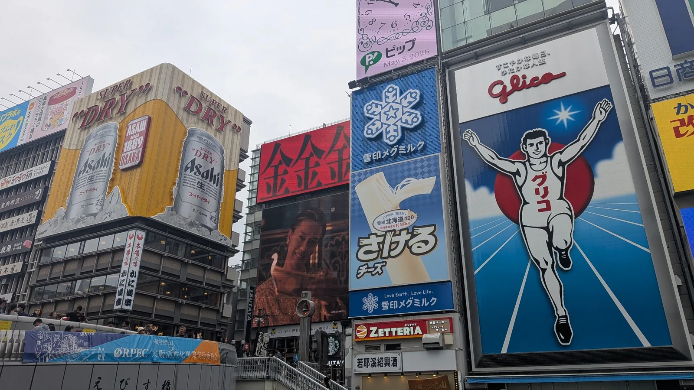

3 h · On foot · Private
Private tour — 3 h
The full Osaka Ura route: Amerikamura, Namba, Dotonbori, Den Den Town and Shinsekai. Just for your group, at your own pace, with stops wherever you like.
See the price list